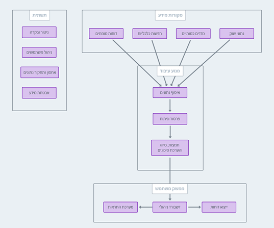

סקירת המערכת¶
הקדמה¶
מערכת SCAR (Supply Chain Anomaly Radar) היא פלטפורמה מתקדמת מבוססת נתונים שפותחה במשותף על ידי רשות חירום לאומית ומשרד החדשנות, המדע והטכנולוגיה (אגף קו האופק). המערכת נועדה לספק יכולות ניטור, ניתוח והתרעה מקיפות על שיבושים בשרשראות אספקה עולמיות המשפיעות על סחורות חיוניות לצרכים האסטרטגיים של ישראל.
האתגר¶
ניהול מלאים אסטרטגיים בעידן של אי-ודאות גלובלית¶
בכלכלה העולמית המחוברת של ימינו, שרשראות אספקה מתמודדות עם אתגרים חסרי תקדים:
- מתחים גיאופוליטיים המשפיעים על מסלולי סחר ומדיניות ייצוא
- שינויי אקלים המשפיעים על ייצור חקלאי ותחבורה
- תנודתיות כלכלית הגורמת לתנודות מחירים ואי-יציבות בשוק
- משברי בריאות עולמיים המשבשים ייצור ולוגיסטיקה
- צווארי בקבוק תשתיתיים היוצרים עיכובים בתחבורה
- שינויים רגולטוריים המשפיעים על תקנות יבוא/ייצוא
גורמים אלה יוצרים סביבה מורכבת ודינמית שבה גישות ניטור מסורתיות אינן מספקות. SCAR מתמודדת עם אתגר זה על ידי מתן נראות בזמן אמת ורב-ממדית לסיכוני שרשרת אספקה.
מטרת המערכת¶
SCAR משמשת ככלי תומך החלטה עבור משרדי ממשלה ובעלי עניין האחראים על ניהול משאבים אסטרטגיים. היא נועדה ל:
- אפשר קבלת החלטות מומחית - לספק תובנות מונעות נתונים לתמיכה, לא להחלפה, במומחיות אנושית
- להקל על התרעה מוקדמת - לזהות שיבושים פוטנציאליים לפני שהם מסלימים למשברים
- לתמוך בתכנון אסטרטגי - לספק מידע לניהול מלאי, גיוון מקורות ותכנון מגירה
- לשפר תיאום - לספק בסיס נתונים משותף לדיונים בין-משרדיים
הערה חשובה
SCAR היא מערכת תמיכה למומחים. היא משפרת יכולות קבלת החלטות אנושיות אך אינה מחליפה את השיקול והמומחיות של פקידי ממשלה ומומחי תוכן.
יכולות ליבה¶
ניטור רב-ממדי¶
SCAR עוקבת אחר סחורות על פני שישה ממדים קריטיים:
| ממד | תיאור | תדירות עדכון |
|---|---|---|
| סנטימנט חדשות | ניתוח כיסוי חדשותי ומגמות סנטימנט | יומי |
| מחירי סחורות | מחירי שוק עתידיים ותנועות מחירים | יומי |
| עלויות הובלה | מדדי שילוח ותעריפי הובלה | יומי |
| היצע וביקוש | נתוני ייצור וצריכה עולמיים | חודשי |
| ייצוא עולמי | זרימות סחר עולמיות וכמויות ייצוא | חודשי |
| יבוא לישראל | כמויות יבוא לישראל לפי מדינת מקור | חודשי |
זיהוי אנומליות¶
המערכת משתמשת באלגוריתמים מתוחכמים לזיהוי:
- חריגים סטטיסטיים בתנועות מחירים, נפחי סחר או מדדים אחרים
- הפרות סף כאשר KPIs חוצים רמות סיכון מוגדרות מראש
- שינויי מגמה המעידים על שינויים בדינמיקת השוק
- סטיות תבנית מנורמות היסטוריות או דפוסים עונתיים
ניתוח והקשר¶
SCAR מספקת ניתוח הקשרי באמצעות:
- השוואות היסטוריות לזיהוי מגמות ארוכות טווח
- ניתוח קורלציה להבנת קשרים בין אינדיקטורים שונים
- פרשנות מומחים מאנליסטי שוק וכלכלנים
- תובנות מופעלות AI שנוצרו ממקורות נתונים לא מובנים
תחזיות¶
המערכת משלבת:
- תחזיות מומחים מאנליסטים של Trading Economics
- תחזיות סטטיסטיות מבוססות נתונים היסטוריים
- ניתוח תרחישים לתוצאות פוטנציאליות שונות
התראות והודעות¶
מערכת התראות ניתנת להגדרה ש:
- עוקבת אחר KPIs מול ספי סף הניתנים להתאמה אישית
- שולחת הודעות פרואקטיביות כאשר מתרחשים שינויים משמעותיים
- מתעדפת התראות לפי חומרה והשפעה פוטנציאלית
- תומכת במספר ערוצי הודעות
אנליטיקה ויזואלית¶
דשבורדים אינטראקטיביים הכוללים:
- תרשימי סדרות זמן לניתוח מגמות
- מפות גיאוגרפיות המציגות זרימות ייצור וסחר
- מפות חום המדגימות נתונים רב-ממדיים
- טבלאות השוואה לניתוח חוצה-מדינות או חוצה-סחורות
ארכיטקטורת המערכת¶
תשתית ענן - נימבוס¶
SCAR בנויה על תשתית ענן ממשלתי נימבוס, המבטיחה:
- אבטחה - הגנת נתונים וביקורות גישה בדרגת ממשלה
- מדרגיות - יכולת לטפל בנפחי נתונים גדלים
- אמינות - זמינות גבוהה ויכולות התאוששות מאסון
- תאימות - עמידה בתקני IT ממשלתיים ישראליים
צינור נתונים¶
תהליך עיבוד הנתונים במערכת SCAR מתבצע בשלבים הבאים:

תיאור שלבי הצינור:
1. מקורות מידע: - נתוני שוק - מחירי חוזים עתידיים, מדדי הובלה מ-Trading Economics ו-Reuters - מדדים כמותיים - נתוני סחר, ייצוא, יבוא מ-UN Comtrade ו-Israel Customs - חדשות כלכליות - כתבות חדשות מאתרי חדשות כלכליים - דוחות מומחים - ניתוחי שוק, תחזיות מ-USDA, דוחות מומחים
2. מנוע עיבוד: - איסוף נתונים - איסוף אוטומטי מתוזמן מכל מקורות המידע - פרסור וניתוח - עיבוד נתונים מובנים, ניקוי ואימות - תמצות, סיווג והערכת סיכונים - עיבוד שפה טבעית, למידת מכונה, חישוב KPIs
3. ממשק משתמש: - דשבורד ניהולי - תצוגה ויזואלית של KPIs, תרשימים ומפות - ייצוא דוחות - יצירת דוחות מותאמים אישית וייצוא - מערכת התראות - התראות אוטומטיות על ספי סיכון
4. תשתית: - ניטור ובקרה - ניטור בריאות המערכת ואיכות נתונים - ניהול משתמשים - בקרת גישה והרשאות - אחסון ותחקור נתונים - מסד נתונים הניתן לשאילתה - אבטחת מידע - הצפנה, ביקורת ותאימות
רכיבים מרכזיים¶
- מודול איסוף נתונים
- קריאות API מתוזמנות למקורות נתונים חיצוניים
- בדיקות תקינות ואיכות נתונים
-
טיפול בשגיאות ומנגנוני ניסיון חוזר
-
מנוע עיבוד AI
- עיבוד שפה טבעית לכתבות חדשות
- ניתוח סנטימנט וסיווג נושאים
- אלגוריתמים לזיהוי אנומליות
-
יצירת תחזיות
-
שכבת אחסון נתונים
- מסד נתונים סדרות זמן לנתונים היסטוריים
- אחסון מסמכים לתוכן לא מובנה
-
קטלוג מטא-נתונים לממשל נתונים
-
מערכת ניטור ובקרה
- ניטור בריאות צינור נתונים
- יצירת והפצת התראות
-
רישום ביקורת ומעקב תאימות
-
ממשק משתמש
- דשבורד מבוסס אינטרנט
- ויזואליזציות אינטראקטיביות
- יצירת דוחות וייצוא
- ניהול גישת משתמשים
מקורות נתונים¶
SCAR משלבת נתונים ממספר מקורות מהימנים:
Trading Economics¶
- מחירי חוזים עתידיים (עדכונים יומיים)
- מדדי הובלה (עדכונים יומיים)
- תחזיות כלכליות (עדכונים קבועים)
- ניתוחי מומחים בשוק (עדכונים קבועים)
משרד החקלאות האמריקאי (USDA)¶
- נתוני ייצור עולמיים (חודשי)
- אומדני צריכה (חודשי)
- תחזיות היצע וביקוש (חודשי)
יוזמת הנתונים המאוגדת (JODI)¶
- נתוני ייצור אנרגיה (חודשי)
- נתוני צריכת אנרגיה (חודשי)
- סטטיסטיקות נפט וגז (חודשי)
UN Comtrade¶
- סטטיסטיקות סחר עולמיות (חודשי)
- נפחי ייצוא לפי מדינה וסחורה (חודשי)
- ניתוח זרימות סחר (חודשי)
Israel Customs DataGov¶
- נתוני יבוא ישראליים (חודשי)
- סיווגי סחורות מפורטים (חודשי)
- מידע על מדינות מקור (חודשי)
Reuters¶
- מדד הובלת מכולות (יומי)
- נתוני שוק פיננסי (יומי)
יתרונות המערכת¶
מודעות מצבית משופרת¶
- נראות בזמן אמת לתנאי שרשרת אספקה עולמית
- כיסוי מקיף על פני מספר ממדי נתונים
- תובנות מונעות נתונים מחליפות הרגשות בטן והנחות
זיהוי מוקדם ומניעה¶
- ניטור פרואקטיבי מזהה בעיות לפני שהן מסלימות
- ניתוח מגמות חושף סיכונים מתפתחים
- יכולות חיזוי מאפשרות תכנון קדימה
איכות החלטות משופרת¶
- נתונים אובייקטיביים מפחיתים הטיות קוגניטיביות
- הקשר היסטורי מודיע להחלטות נוכחיות
- ניתוח מומחים משלים נתונים כמותיים
תיאום משופר¶
- תמונה מבצעית משותפת לכל בעלי העניין
- בסיס נתונים משותף לתיאום בין-משרדי
- מדדים סטנדרטיים מאפשרים תקשורת עקבית
ניהול סיכונים¶
- תובנות גיוון מזהות מקורות אספקה חלופיים
- אופטימיזציה של מלאי מאזנת עלויות וחוסן
- תכנון מגירה מכין לשיבושים פוטנציאליים
תפקידי משתמש וגישה¶
SCAR תומכת במספר תפקידי משתמש עם רמות גישה שונות:
| תפקיד | רמת גישה | משתמשים טיפוסיים |
|---|---|---|
| מנהל מערכת | גישה מלאה לכל התכונות, ניהול משתמשים | צוות IT, בעלי מערכת |
| אנליסט | גישה מלאה לדשבורד, יצירת דוחות | אנליסטים ממשלתיים, כלכלנים |
| צופה | גישת קריאה בלבד לדשבורד | בכירים, מקבלי החלטות |
| אורח | גישה מוגבלת לדשבורדים נבחרים | יועצים חיצוניים, חוקרים |
אבטחה ותאימות¶
אבטחת נתונים¶
- הצפנה במנוחה ובמעבר
- בקרות גישה מבוססות הרשאות מבוססות תפקיד
- רישום ביקורת של כל פעולות המשתמש
- הערכות אבטחה קבועות
תאימות¶
- עמידה בתקני IT ממשלתיים
- תאימות לתקנות פרטיות נתונים
- יישום מדיניות שמירה
- ביקורות תאימות קבועות
שיפורים עתידיים¶
מפת הדרכים של SCAR כוללת:
- הרחבת מקורות נתונים - שילוב עם מאגרי מידע בינלאומיים נוספים
- יכולות AI מתקדמות - עיבוד שפה טבעית משופר ומודלים חיזויים
- גישה ניידת - אפליקציות ניידות מקוריות לגישה בכל מקום
- דיווח אוטומטי - דוחות חודשיים הניתנים להתאמה אישית עם יצירה אוטומטית
- גישת API - גישה פרוגרמטית לשילוב עם מערכות אחרות
- ויזואליזציה משופרת - ויזואליזציות תלת-ממד ותכונות מציאות רבודה
קבלת עזרה¶
לסיוע עם מערכת SCAR:
- תמיכה טכנית: צרו קשר עם צוות התמיכה שלכם
- חומרי הדרכה: זמינים בחלק העזרה של המערכת
- מדריך משתמש: תיעוד זה מספק הנחיות מקיפות
- משוב: שלחו הצעות דרך טופס המשוב במערכת
עודכן לאחרונה: דצמבר 2025